Overview
For our second project, we analized a dataset containing the Billboard Top 100 songs for the year 2000.
The dataset has the following columns: Artist, track name, genre, weekly positions on Top 100 for the next 76 weeks after date entering to the Billboard, date entered and date peaked and 317 rows.
My Hypothesis
"The tracks that reach the peak faster, stay as number ones longer".
Basically I want to study the relationship between the time a track takes to reach the position number one and the time that it will stay there. This will describe to me what genre/artist are the most popular and as a result the most profitable - but do not have data to proof the 'profitable' statement. This can help the industry to know where they have to invest their money to continue being one of the most profitable indusries in the world.
"The American music industry generated 15 billion U.S. dollars in 2012, making up 30 percent of the total 50 billion U.S. dollars generated by the global music industry. " According to documented Statistics & Facts
Assumptions
We assumed the data is reliable and accurate.
Risks
We only have the year 2000. The population might not represent the most accurate behavior, we would need at least 5 to 10 years to be more precise.
I also noticed on my EDA that the results sometimes are biased by the number of tracks that get into the billboard for some genre/artists.
Below table shows number of tracks on the top 100 by genre for the year 2000.
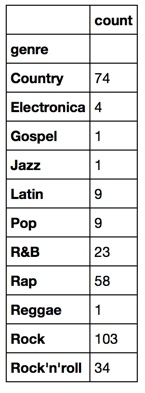
Findings and Visuals
Most of my analysis was done by GENRE.
First I performed a data cleaning but replacing '*' by nulls, making the week columns numerical to facilitate calculations, eliminated redundancy in the genre column where we have different names for the same GENRE. Second I added 4 columns to be able to demostrate my hypotesis using the Python libraries and function we have learned so far. These columns are (Please don't mind the naming - will go back there)
- 'month_entered' - The month when the track entered to the Billboard.
- 'month_picked' - The month when the track entered to the piked.
- weeks_bet_ent_peak' - The number of weeks it took to enter to the peak.
- 'weeks_in_number1'- The number of weeks the track stayed as # 1.
- 'weeks_in_top100'- The number of weeks the track stayed in the Top 100.
The below tables and graphics illustrate the behavior by GENRE in terms of how many weeks they took to reach peak, how long they stayed as number one and how many weeks they stayed on the top 100.
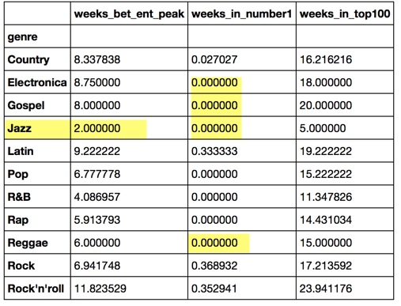
We can see the following plots the genre that took less to reach the top was "Jazz" but there is only one jazz song, it does not represent the behavior of the population, however the most songs are under "Rock". I undertand by looking at the tracks that "Rock" is what is called sometimes Soft Rock" .
Rock is definetely the favorite genre and we can see the behavior in these graphics. It is followed by Rock'm roll and then Lati Music As the top 3 favorite genre(s)
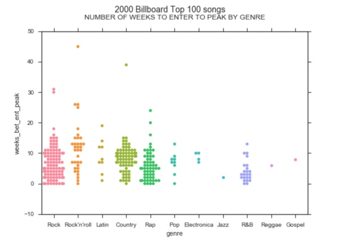 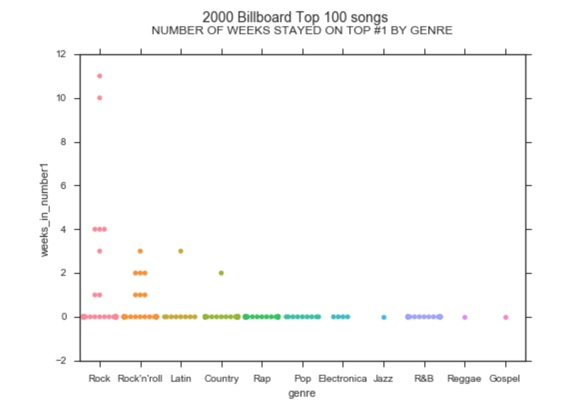 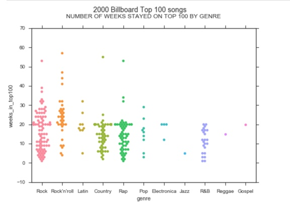 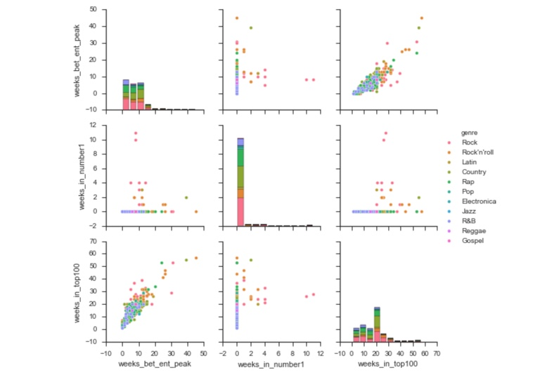
Another set of data that caught my attention was who were the top artists. You can see in the information below that Santana was the most popular followed by Destiny's Child and followed by Madonna and others.
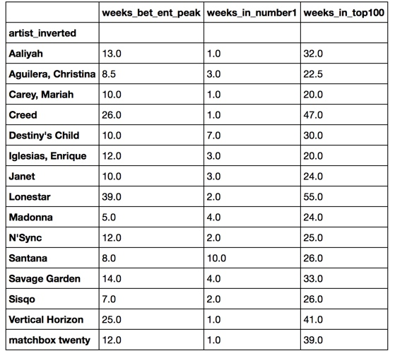
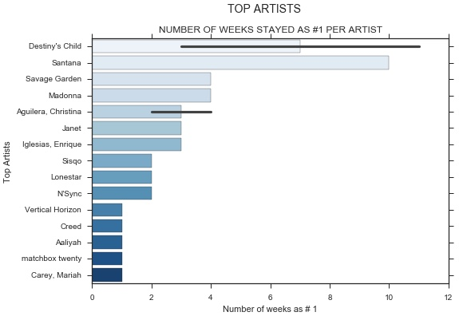
Results
We ran our descriptive statistics on 3 variables: The number of weeks for a track to get to peak, the number of weeks it stays on the number one place, and the number of weeks the track stays on the the top 100. we can see that this last one is distributed more normally, and the first two are skewed to the right.
As per this analysis of the Billboard year 2000 dataset we can confirm our Hypothesis that the tracks that reach the top faster stays there longer BUT it does not mean that they will stay in the top100 for a longet time. This last part was a discovery and not part of my Hypothesis.
See tables and Graphics below.
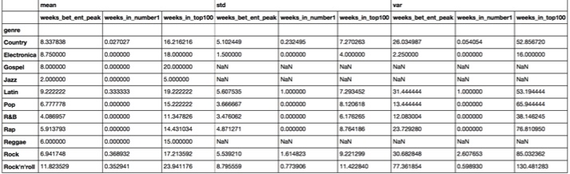
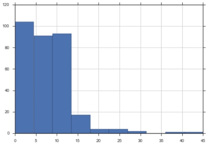
Histogram number of weeks that took to hit Peak
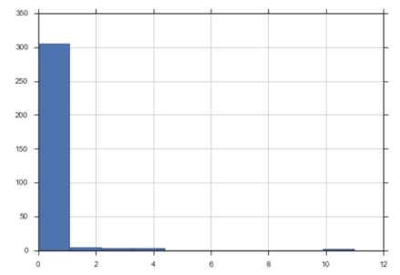
Histogram number of weeks staying as #1
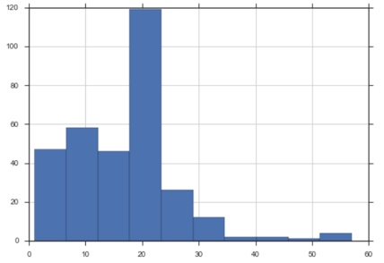
Histogram number of weeks stayin the top 100
At GA this 3rd week we have acquired more knowledge that will allow me to do a more technical and in depth statistical inference over the Billboard dataset. Will be adjusting this statistical analysis as we speak.